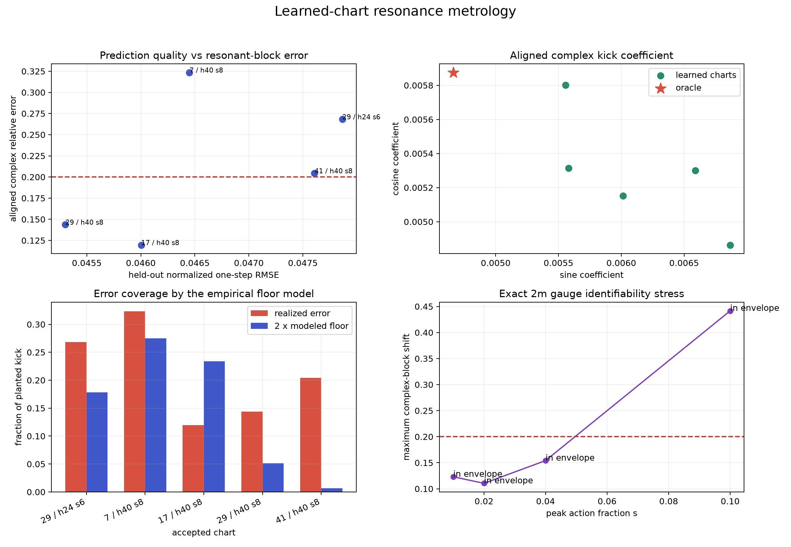

Can the resonance survive the chart?
resolved_refuted
On one noiseless synthetic exact-symplectic kicked twist map observed through a fixed nontrivial canonical chart, the trajectory-band ensemble returned 'resolved_refuted' under the frozen learned-chart, control, and exact-gauge stress gates.
A frozen falsifier failed by the predeclared decisive margin. The claimed residual precision is refuted on this fixture.
The rotation law was initialized from circular-mean raw polar increments on the training trajectories only (median orbit-fit RMSE 0.0012 rad/step). That seed uses no oracle coordinates or planted map parameters and is recorded separately from the learned result.

Five-layer output
| prediction-accepted charts | 8 / 8 |
|---|---|
| charts with an estimable block | 5 |
| action-kick coefficient (sine, cosine) | [0.006013516857630817, 0.005299431092746741] |
| generating amplitude | 0.00267179 |
| leading island halfwidth | 0.188743 |
| synthetic oracle generating amplitude | 0.0025 |
Predeclared gates
- PASS — G1 complex recovery: 0.19585118376742347
- PASS — G2 magnitude recovery: 0.06871765238142351
- PASS — G3 location: 0.059213103305705346
- FAIL — G4 floor coverage: 0.2
- FAIL — G5 false positives: {'null_consensus_magnitude': 0.0006372143331024892, 'null_successful_chart_count': 5, 'null_prediction_healthy_count': 8, 'null_instrument_available': False, 'null_below_two_floors': True, 'wrong_harmonics_passed': True, 'off_band_abstained': True, 'shuffled_over_truth': 0.3722591485889717}
- PASS — G6 detection roc: 1.4010279616038028
- PASS — G7 trajectory vs circle: {'trajectory_complex_error': 0.19585118376742347, 'circle_median_complex_error': 0.028178274153663335, 'trajectory_to_circle_ratio': 6.950432191105704, 'prototype_circle_transfer_passed': False}
- FAIL — G8 exact gauge stress: {'noncomparable_in_envelope_count': 21, 'maximum_in_envelope_complex_shift': 0.441626479957525, 'maximum_in_envelope_magnitude_shift': 0.4328859331672065}
- PASS — G9 variant stability: 0.034196295007790485
Accepted learned charts
| chart | one-step RMSE | complex error | magnitude error | floor | covered |
|---|---|---|---|---|---|
| seed-29-h24-s6 | 0.04786 | 26.82% | 12.75% | 6.692e-04 | no |
| seed-7-h40-s8 | 0.04645 | 32.34% | 12.19% | 1.030e-03 | no |
| seed-17-h40-s8 | 0.04600 | 11.96% | 7.10% | 8.774e-04 | yes |
| seed-29-h40-s8 | 0.04530 | 14.36% | 2.75% | 1.919e-04 | no |
| seed-41-h40-s8 | 0.04761 | 20.44% | 5.58% | 2.498e-05 | no |
Identifiability margin
Smallest exact-gauge rung leaving the prediction envelope: 0.1. Maximum in-envelope complex shift: 0.441626479957525; magnitude shift: 0.4328859331672065.
In-envelope gauge fits without a comparable block: 21. A non-comparable fit forbids support; only a measured comparable shift beyond twice the frozen tolerance can produce a gauge refutation.
Estimator variants
| variant | charts | consensus | relative deviation |
|---|---|---|---|
| primary_linear | 5 | [0.006013516857630817, 0.005299431092746741] | 0.0 |
| constant_chart | 5 | [0.004327901887423644, 0.005181032146413739] | 0.21081565289250098 |
| quadratic_chart | 0 | None | None |
| inner_band | 4 | [0.005740465455481483, 0.0052755196350259895] | 0.034196295007790485 |
| learned_h_frequency | 5 | [0.006023558716289015, 0.005296987419926601] | 0.001289385110815217 |
| unweighted | 5 | [0.005994144826424463, 0.005300220790005713] | 0.0024188640673442363 |
What the number means
The primary estimator fits the complex residual harmonic across an action band that crosses the target resonance. It separates a smooth physical block from the chart's coboundary-shaped detuning signature. Results are aligned on shared states, checked against an oracle only in this synthetic reference run, and stress-tested with exact symplectic chart gauges.
What it does not mean
No formal KAM, torus, interval, probability, noise, hardware, or coordinate-global guarantee is claimed. Static action ripple is a chart diagnostic, not an island-width floor. The empirical floor model is promoted only if its predeclared coverage and detection checks pass.
Artifacts: manifest.json, overview.png,
s1-trajectories.csv, s2-null-trajectories.csv, and
the saved chart ensemble under models/.